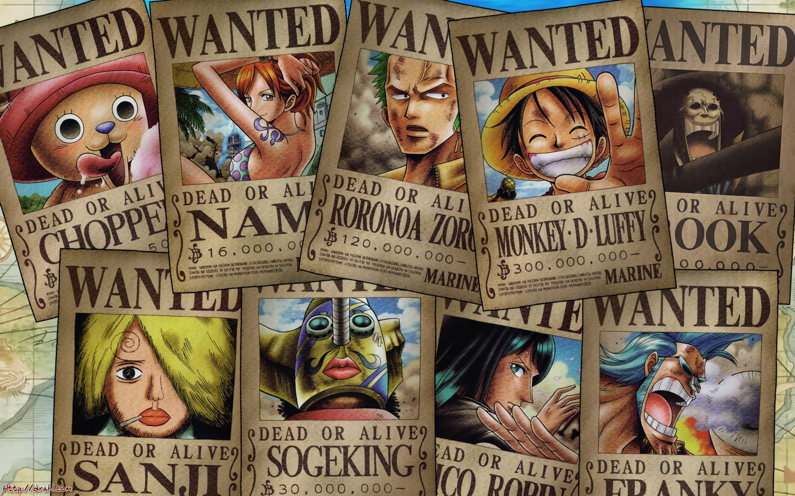
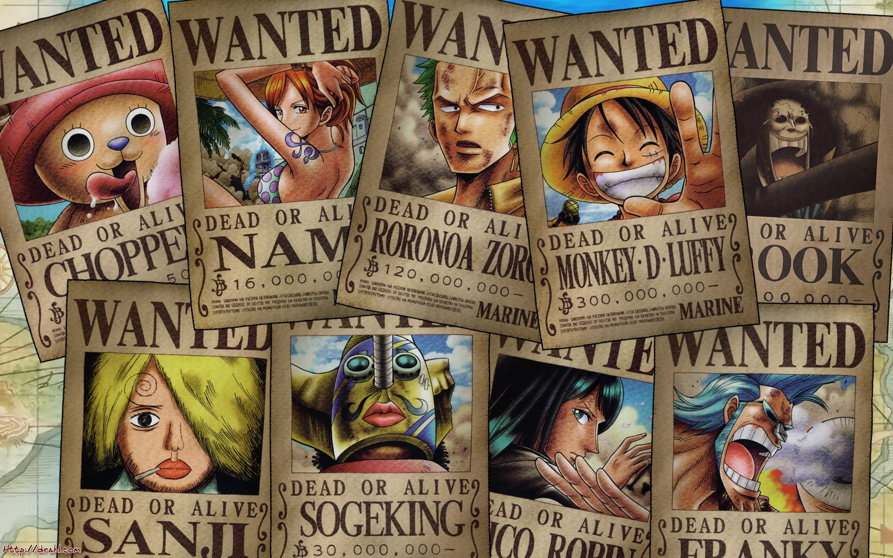
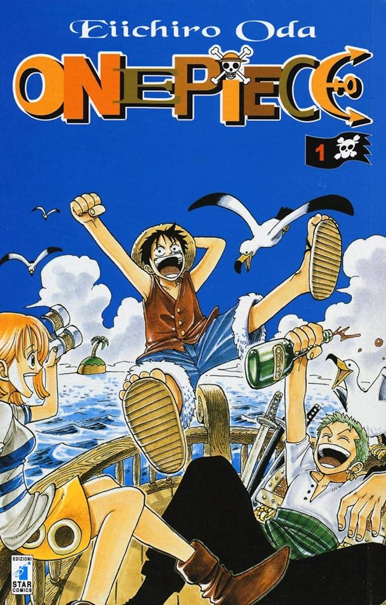

Manga
One Piece è un manga giapponese creato da Eiichirō Oda, pubblicato per la prima volta il 22 luglio 1997 sulla rivista Weekly Shōnen Jump e in Italia presso la casa editrice Star Comics. La storia segue le avventure di Monkey D. Luffy, un giovane pirata che sogna di diventare il Re dei Pirati trovando il leggendario tesoro chiamato One Piece. Luffy, dotato del potere di allungare il suo corpo come la gomma dopo aver mangiato un Frutto del Diavolo, viaggia per il mondo con la sua ciurma, la Ciurma di Cappello di Paglia. Il manga è famoso per il suo mondo vasto e dettagliato, le sue intricate trame, l'umorismo, e le emozionanti battaglie. Con oltre 100 volumi pubblicati, One Piece è uno dei manga più venduti e longevi di tutti i tempi.
